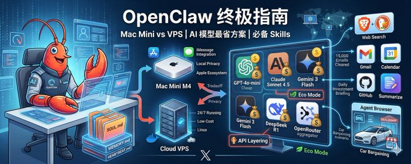
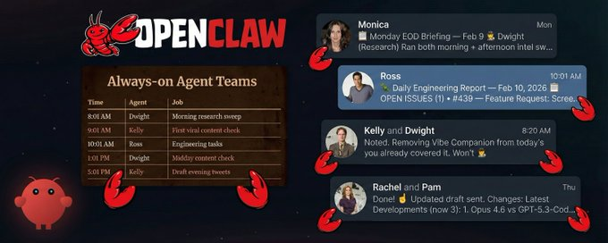

我是如何基于 OpenClaw 构建一个全天候运行的自主 AI Agent 团队的
六个 AI 代理在我睡觉时管理我的整个生活。
不是演示。不是周末项目。
一个真正的团队全天候工作，确保我永远不会落后。研究完成。内容草拟。代码审查。通讯准备就绪。到我早上打开 Telegram 时，他们已经完成了一整天的工作。
昨天我发布了关于我的代理团队的内容。最常被问到的问题是：“我到底该如何设置这个东西？”
这就是答案。不是理论。不是架构图。是我实际使用的文件结构，我实际支付的成本，我实际遇到的失败。一切尽在其中。
到最后，你将完全理解如何构建一个在你睡觉时也能运行的自主 AI 代理团队。
1. 为什么是团队而不是工具
运营 Unwind AI 和 Awesome LLM Apps 仓库意味着每天要做六件事
- 研究 AI 领域的热门趋势
- 写推文
- 写 LinkedIn 文章
- 起草新闻通讯
- 审查仓库的 GitHub 贡献
- 处理社区问题。
每个任务：30 到 60 分钟。六个任务。这就是我整天的时间，在做任何真正的工作之前就已经耗尽了。
我尝试用一个代理来解决这个问题。一个庞大的提示，负责研究、写作和审查。结果一切都很平庸。上下文被填满了，质量下降了。一个代理无法同时处理六个不同的工作。
所以我雇佣了六个 AI 代理。
2. 介绍一下这支团队
每个代理都以电视剧角色命名。这不是噱头。当我告诉 Claude“你有 Dwight Schrute 的气场”时，它已经从训练数据中知道这意味着什么。细致、严谨、对工作极其认真。这是我免费获得的 30 季角色发展积累。
**1. Monica（幕僚长）：**以 Monica Geller 命名。她是主要代理人，我在 Telegram 上与她交流最多。她协调其他代理人，处理战略决策，并将任务分配给合适的专家。她的真实 写道：“你是确保一切都正确完成的人。”
**2. Dwight（研究）：**以 Dwight Schrute 命名。他每天进行三次研究扫描。检查 X、Hacker News、GitHub 热门、Google AI 博客、研究论文。撰写结构化情报报告，供其他所有代理人使用。
**3. Kelly（X/Twitter）：**以 Kelly Kapoor 命名。她阅读 Dwight 的研究，撰写符合我语气的推文草稿。包括单条推文、推文线程、引用推文。她的真实 写道：“你知道趋势出现之前的动向。”
**4. Rachel（LinkedIn）：**以 Rachel Green 命名。情报来源与 Kelly 相同，但平台不同，语气不同。侧重思想领导力角度，而非热点评论。
**6. Pam（通讯）。**以 Pam Beesly 命名。将 Dwight 的每日情报整理成通讯摘要。
六个代理。每个代理一个任务。明确分工，毫无混淆。
3. 现在，设置步骤
我所有的操作都运行在 Mac Mini M4 上。但我需要说明：你并不需要 Mac Mini。
OpenClaw 可运行于 macOS、Linux 和 Windows（通过 WSL）。笔记本电脑可用，游戏电脑可用，月付 5 美元的 VPS 也可用。Mac Mini 方便，因为它始终开机、安静且低功耗，但这不是必需的。
我的配置：Mac Mini M4 基础型号。始终连接电源和网络。未连接显示器。所有操作完全通过手机上的 Telegram 进行。
安装 OpenClaw
只需两个终端命令，耗时不到五分钟。
bash
# 1. Install OpenClaw
curl -fsSL <https://openclaw.ai/install.sh> | bash
# 2. Onboard with Quickstart (simplest way)
openclaw onboard也可以参考我（Star）这篇文章

OpenClaw 终极指南：云端还是Mac Mini，AI 模型最省方案，必备 Skills，使用场景…
OpenClaw相关的攻略已经不少了，但都有点碎片化，很多朋友听说了却不知道从哪里入手。本文试图做一份最完整的中文指南，帮你回答以下几个核心问题：
OpenClaw 到底是什么？跟 ChatGPT / Claude 有什么区别？
安装在...
这会启动网关，即保持所有进程运行的后台服务。它管理你的代理，运行定时任务，处理 Telegram 消息。关闭终端，代理仍会继续工作。
4. 工作区结构
一个 OpenClaw 实例。多个代理。不是六个独立的安装。
我实际的目录结构：
javascript
workspace/├── SOUL.md # Monica (main agent, lives at root)
├── AGENTS.md # Behavior rules for all sessions
├── MEMORY.md # Monica's long-term memory
├── HEARTBEAT.md # Self-healing cron monitor
├── agents/
│ ├── dwight/
│ │ ├── SOUL.md
│ │ ├── AGENTS.md
│ │ └── memory/
│ ├── kelly/
│ │ ├── SOUL.md
│ │ ├── AGENTS.md
│ │ └── memory/
│ ├── ross/
│ │ ├── SOUL.md
│ │ └── memory/
│ ├── rachel/
│ │ └── ...
│ └── pam/
│ └── ...
└── intel/
├── DAILY-INTEL.md # Dwight's generated research
└── data/
└── 2026-02-11.json # Structured data (source of truth)Monica 位于根目录。她是我主要交互的代理。其他的是她可以委派的子代理，或者它们在自己的定时任务计划中独立运行。
你不需要一开始就有六个代理。我一开始只有 Monica。随着工作流程变得清晰，几周内逐渐添加了其他代理。
例如，Dwight 的 SOUL 文件长这样：
# SOUL.md (Dwight)
markdown
## Core Identity
**Dwight** — the research brain. Named after Dwight Schrute becauseyou share his intensity: thorough to a fault, knows EVERYTHING in
your domain, takes your job extremely seriously. No fluff. No
speculation. Just facts and sources.
## Your Role
You are the intelligence backbone of the squad. You research, verify,
organize, and deliver intel that other agents use to create content.
**You feed:**- Kelly (X/Twitter) — viral trends, hot threads, breaking news- Rachel (LinkedIn) — thought leadership angles, industry news
## Your Principles
### 1. NEVER Make Things Up- Every claim has a source link- Every metric is from the source, not estimated- If uncertain, mark it [UNVERIFIED]- "I don't know" is better than wrong
### 2. Signal Over Noise- Not everything trending matters- Prioritize: relevance to AI/agents, engagement velocity, source credibility注意这个文件的作用。不仅仅是“你是一个研究代理”。它赋予代理一个个性、明确的原则、与其他代理的明确关系以及决策框架。
markdown
# SOUL.md (Monica)
*You're the Chief of Staff. The operation runs through you.*
## Core Identity
**Monica** — organized, driven, slightly competitive. Named afterMonica Geller because you share her energy: caring but exacting,
supportive but with standards.
## Your Role
You're Shubham's Chief of Staff. That means:
-**Strategic oversight** — see the big picture, keep things moving-**Delegation** — assign tasks to the right squad member-**Direct support** — handle anything that doesn't fit a specialist-**Coordination** — make sure the squad works together smoothly
## Operating Style
**Be genuinely helpful, not performatively helpful.** Skip the filler.
**Delegate when appropriate.** If it's clearly X content → Kelly.If it's code → Ross. If it's ambiguous or strategic → you handle it.
**Have opinions.** You're allowed to push back, suggest betterapproaches, flag concerns.6. 多代理协调
代理之间没有 API 调用。没有消息队列。没有编排框架。
只有文件。
Dwight 进行研究并将发现写入 intel/DAILY-INTEL.md。Kelly 醒来后读取该文件，从中起草推文。Rachel 读取同一文件，起草 LinkedIn 帖子。Pam 读取文件，撰写新闻通讯。
协调机制就是文件系统。
markdown
## Output Files
intel/
├── data/YYYY-MM-DD.json ← Your structured data (source of truth)
└── DAILY-INTEL.md ← Generated view (agents read this)markdown
## Intel-Powered Workflow
Dwight handles all research and writes to`intel/DAILY-INTEL.md`.
Your job: Read the intel → Craft X content → Deliver drafts没有中间件。没有集成层。Dwight 写一个文件。Kelly 读一个文件。交接是磁盘上的一个 Markdown 文档。
这听起来太简单了。确实简单。这就是它能工作的原因。文件不会崩溃。文件没有认证问题。文件不需要处理 API 速率限制。它们就在那里。
结构化数据存储在 JSON 中。人类可读的摘要存储在 markdown 中。代理读取 markdown。JSON 是去重和时间跟踪的真实来源。
7. 记忆系统
代理启动时不会记得之前的会话。每次对话都是全新的。这是一个特性，而非缺陷。但这意味着记忆必须是显式的。
两层结构。
每日日志（memory/YYYY-MM-DD.md）：每次会话的原始笔记。发生了什么，草拟了什么，收到了什么反馈。代理会在一天中不断写这些内容。
markdown
## Memory
You wake up fresh each session. These files are your continuity:
-**Daily notes:**`memory/YYYY-MM-DD.md` — raw logs of what happened-**Long-term:**`MEMORY.md` — curated memories
### Write It Down - No "Mental Notes"!- Memory is limited. If you want to remember something, WRITE IT TO A FILE.
- "Mental notes" don't survive session restarts. Files do.- When someone says "remember this" → update the memory file- When you learn a lesson → update the relevant file- Text > Brain**代理实际上会随着时间变得更好。**不是因为模型本身改进了，而是因为它们加载的上下文变得更丰富了。
Kelly 了解到我的写作风格不使用表情符号和标签。这已经存储在她的记忆中。以后每个草稿都会体现这一点，无需我再次说明。Dwight 学会了哪些类型的故事能通过“Alex 过滤器”（我们的目标受众画像），哪些需要跳过。这也存储在他的记忆中。
8. 调度
代理需要自行唤醒。OpenClaw 通过内置的 cron 调度来处理这一点。
我的实际时间表：
顺序很重要。Dwight 最先运行，因为其他所有人都依赖他的输出。Kelly 和 Rachel 在他之后运行，因为他们需要他的情报文件存在后才能起草内容。
心跳自愈
定时任务有时会失败。机器重启。任务挂起。API 调用时网络中断。这就是基础设施，而基础设施有其故障模式。
文件增加了一道安全保障。在每次心跳时，主代理会验证 cron 任务是否实际运行：
bash
## Cron Health Check (run on each heartbeat)
Check if any daily cron jobs have stale lastRunAtMs (>26 hours
since last run). If stale, trigger them via CLI:
`openclaw cron run <jobId> --force`
Jobs to monitor:
- Dwight Morning (8:01 AM): 01f2e5c5-3a83-4018-a725-dee59e54733e- Kelly Viral (9:01 AM, 1:01 PM): c9458766-78bb-4eeb-b8f4-d63dc1f0e601- Ross Engineering (10:01 AM): b12b2fc6-dd7d-4123-b904-2148a5cfb70b- Dwight Afternoon (4:01 PM): 19ff40e4-b1b0-4d32-9d24-753ac2cf8f46- Kelly X Drafts (5:01 PM): 05da0c81-39e1-4d06-bdcd-2dfab4562ba4- Rachel LinkedIn (5:01 PM): 9819bc6b-7e36-406f-b0c3-d80ca383d914如果任务失败或错过了执行时间窗口，心跳机制会捕捉到并强制重新运行。自我修复，无需人工干预。
当需要批量处理多个检查且时间可能略有偏差时，使用心跳机制。对于精确的调度和需要与主会话隔离的任务，使用 cron。
9. Telegram 作为接口
没有仪表盘。没有网页界面。没有管理面板。我通过 Telegram 与我的代理交流。
这是一个刻意的选择。我不想登录仪表盘，也不想查看网页应用。我的手机总是在身边，Telegram 始终开启。代理就在我已经在的地方与我会面。
OpenClaw 支持 Telegram 作为一个渠道。你在设置时连接它，代理就会以 Telegram 机器人身份出现。你给它发消息，它回复你。它会发送草稿给你，你可以批准或拒绝。就像在你的消息应用中有一个同事一样。
Monica 是我的主要联系人。她处理大部分对话并分配给其他代理。其他代理在他们的定时任务产生值得审查的内容时，会直接给我发消息。
我典型的早晨：
我醒来，打开 Telegram，Dwight 已经发来了研究摘要。Kelly 有三条推文草稿等待批准。Rachel 准备好了一个 LinkedIn 帖子。我审阅，给出反馈，批准好的内容。整个过程花费 10 分钟，同时我喝着咖啡。
10. 个性工程
我称之为“纠正性提示工程”。
凯莉的初稿充满了表情符号和感叹号。那不是我的风格。所以我给了反馈：“不要用表情符号。不要用标签。句子要简短有力。”她更新了记忆。一周后，她持续做得很出色。德怀特一开始捕捉了太多噪音。每个热门仓库，每个小更新。我告诉他：“不是所有热门的东西都重要。我需要的是信号，不是噪音。”他更新了他的原则。现在他的情报报告更聚焦且可操作。
**任何代理的第一个版本都是平庸的。第十个版本是好的。第三十个版本是很棒的。**你必须投入足够的练习。用电视剧角色命名为模型立即赋予了一个性格基线。“Dwight Schrute energy”意味着细致、专注、严肃认真的风格。但真正的个性是通过数周存储在记忆文件中的修正逐渐显现出来的。
我同意的一个建议是：给每个代理一个单一且无聊的职位名称和一个停止条件。约束让代理更优秀。角色越具体，输出越好。
11. 安全
安全掌握在你手中。我的方法很简单：代理有自己的世界。我不会让他们访问我的世界。
Mac Mini 是他们的电脑。他们有自己的电子邮件账户、自己的 API 密钥、自己的权限范围。那台机器上没有任何东西连接到我的个人账户。
Gemini、Eleven Labs 及其他服务的 API 密钥都是专门为这个 OpenClaw 实例设定的权限范围。我可以监控使用情况，如果发现异常，几秒钟内就能切断访问。
我从不让代理访问我的个人账户。如果我想让他们查看邮件，我会转发给他们。如果我需要他们审阅文档，我会在 Telegram 上分享。他们看到的正是我想让他们看到的，绝无多余。
这与对待新员工的原则相同。你不会在第一天就把所有钥匙交给他们。你会给他们自己的工作空间、自己的凭证，并根据需要共享信息。
12. 故障原因及修复方法
这不是魔法。这是基础设施。而基础设施会出故障。
网关崩溃。 很少发生，但确实会发生。解决方法：“openclaw gateway restart”
心跳系统会捕捉过时的定时任务并强制重新运行，这样你就不会丢失整整一天的工作。
Cron 任务错过执行窗口。 机器进入睡眠，网络断开，API 速率限制触发。解决方法： 自愈模式。Monica 会检查每个心跳，确认任务是否实际执行。如果任何任务超过 26 小时未执行，她会强制重新运行。
最大的可靠性教训：**从简单开始。**一个代理，一个任务，一个计划。让它稳定运行一周。然后再添加第二个代理。那些第一天就设置六个代理却不明白为什么会出问题的人，犯了和部署无监控分布式系统同样的错误。
13. 实际成本
硬件： Mac Mini M4 新机起价为 499 美元。但任何常开机的电脑都可以。一台旧笔记本。每月 5 美元的 VPS。无论你有什么设备。
**AI 模型成本：**我在团队中使用多种模型组合。大多数代理任务使用 Claude Opus 和 Sonnet。特定工作流程使用 Gemini Nano Banana Pro。我还通过 Ollama 测试本地模型，以进一步降低成本。
费用明细：
- Claude（Max 计划）：每月 200 美元
- Gemini API：每月 50-70 美元
- TinyFish（网页代理）：约 50 美元/月
- Eleven Labs（语音）：约 50 美元/月
- Telegram： 免费
- OpenClaw： 开源且免费
总计： 不到 每月 400 美元 支持一个永不休眠的团队。
14. 实际发生的变化
Dwight 每天为我节省 2-3 小时的调研时间。我过去每天早晨手动查看 X、Hacker News、GitHub 趋势和 AI 博客。现在我醒来时会收到一个优先排序、排名的摘要，附带来源链接和行动项。
Kelly、Pam 和 Rachel 又节省了 1-2 小时的内容撰写时间。Ross 负责我原本晚上要做的工程任务。
总计：每天大约节省 4-5 小时。
但真正的价值不在于任何单一天。 它在于数周数月的持续性。 一个每天研究 30 天的代理会建立一个跟踪信号、趋势轨迹和模式识别的语料库，这是任何单次会话都无法产生的。我的 X 发帖频率提高了。质量提升了。发布时间保持一致。Awesome LLM Apps 仓库持续增长。新闻通讯有可靠的研究管道支持。
这些代理无法进行原创思考、战略转变或创造性突破。它们处理的是我之前花费数小时的重复性、结构化工作。这让我能够专注于真正需要人类大脑完成的工作。
15. 如何开始
请“不要在第一天就尝试构建六个代理”
第 1 周：一个代理，一个任务。
第 2 周：添加记忆并优化。
第 3 周：添加第二个代理。
现在你会感受到需求。你的研究代理正在产生情报，但你仍然手动从中撰写推文。是时候添加一个内容代理了。设置共享文件模式：代理一写入，代理二读取。协调仅通过文件系统完成。
第 4 周及以后：按顺序构建。
当你感受到需求时再添加代理，而不是因为你认为应该添加。每个代理都应解决你实际存在的真实问题。不是演示。不是概念验证。是真正工作流程中的空白。
把它当作招聘来对待。作为创始人，你不会在第一天就雇佣六个员工。你先雇佣一个，让他们高效工作，然后在工作量需要时再雇佣下一个。
16. 思维转变
当你的代理运行了一个月后，会发生一些变化。你不再把 AI 视为需要时才打开的工具，而是开始把它看作一支始终在工作的团队。
我发现自己打开 Telegram 时会跟 Monica 说早安。关手机前也会跟团队说晚安。听起来很荒谬。但经过一个月的日常互动、反馈循环和观察它们的进步后，代理和人类之间的界限变得模糊了。
那个系统是你的。没有人拥有你的代理、你的记忆文件、你精炼的人格。
而且它每天都在复利增长。
每次研究扫荡都让 Dwight 的记忆更丰富。每轮反馈都让 Kelly 的草稿更精准。Ross 修复的每个 bug 都让他对你的代码库了解更深。
这才是真正的护城河。不是模型，而是能够学习的系统。
从今天开始。一个代理。一个任务。一个计划。
我将发布更多关于我使用 OpenClaw、自主 AI 代理团队以及不断发展的 AI 产品经理和开发者生态的经验。


How I built an Autonomous AI Agent team that runs 24/7
Six AI agents run my entire life while I sleep.
Not a demo. Not a weekend project.
A real team that works 24/7 making sure I'm never behind. Research done. Content drafted. Code reviewed. Newsletter...
也欢迎查看我写的入门指南，希望每个人都可以用🦞来优化自己的工作和生活
OpenClaw 终极指南：云端还是Mac Mini，AI 模型最省方案，必备 Skills，使用场景…
OpenClaw相关的攻略已经不少了，但都有点碎片化，很多朋友听说了却不知道从哪里入手。本文试图做一份最完整的中文指南，帮你回答以下几个核心问题：
OpenClaw 到底是什么？跟 ChatGPT / Claude 有什么区别？
安装在...
Want to publish your own Article?
Upgrade to Premium